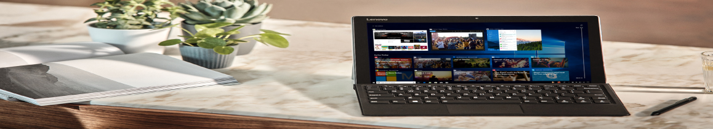
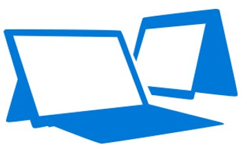
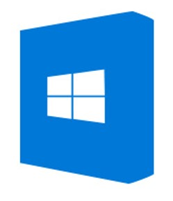
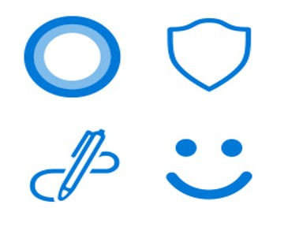

LA ACTUALIZACION DE WINDOWSV10 DE ABRIL DEL 2018
ESTA AQUI
Para ayudar a garantizar la mejor experiencia, la actualización se implementará automáticamente
cuando su PC esté lista. No puedo esperar? Obtenga más información
sobre la actualización y descubra cómo puede obtenerla ahora.

¿Qué podemos ayudarte a encontrar?
|  |
 |
 |
 |
PC con Windows 10
Windows 10 es mejor en un
dispositivo potente y moderno. |
Sistema operativo Windows 10
Hay un Windows 10 para todos:
encuentra el tuyo. |
Caracteristicas
Disfruta de las últimas
características de Windows 10 e
incluye seguridad continua. |
Apoyo
Obtenga ayuda de Windows 10,
consejos y respuestas a
preguntas comunes. |
Las PC con Windows 10 hacen más. Igual que tú.
Cuente con la gama más amplia de computadoras portátiles innovadoras, 2-en-1,
dispositivos todo-en-uno portátiles y teléfonos que puede usar como una PC. Espere
baterías de larga duración, procesadores más rápidos y pantallas de alta resolución.
¿Qué podemos ayudarte a encontrar?
La actualización de Windows 10 de abril de 2018 se implementa automáticamente a través de Windows Update. Una vez que se complete la
descarga, le notificaremos que elija el momento adecuado para finalizar la instalación. Si su versión de Windows
10 ha llegado al final del servicio, use el Asistente de actualización para actualizar ahora.